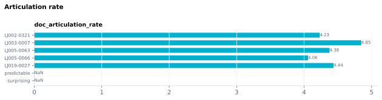

On this page
6.2.10Articulation rate
Syllables per second of speaking time: the speech span (first word's onset to last word's end) minus the silent pauses longer than the pause threshold.
6.2.10.1What it is
Syllables per second of speaking time: the speech span (first word's onset to last word's end) minus the silent pauses longer than the pause threshold. Single value per stimulus.
Typical adult conversational range: 3–6 syllables/sec (Tauroza 1990). Values outside this range usually indicate either a configuration problem (no aligned words → zero) or an unusual stimulus (e.g. read poetry at ~2 syl/sec; rapid news broadcast at ~7 syl/sec).
6.2.10.2See it

6.2.10.3In your output
| stimulus_id | doc_articulation_rate syllables/second |
|---|---|
| LJ002-0321 | 4.232 |
| LJ003-0007 | 4.847 |
| LJ005-0063 | 4.377 |
| LJ005-0066 | 4.058 |
| LJ019-0027 | 4.437 |
6.2.10.4MATLAB
% Load the document-level table (one row per stimulus)
T = readtable('document/documents_summary_<timestamp>.csv', 'TextType', 'string');
T.Properties.VariableNames % every column in the file
head(T(:, {'stimulus_id', 'doc_articulation_rate'}), 10) % this feature's columns (first rows)
% Plot
barh(T.doc_articulation_rate); yticks(1:height(T)); yticklabels(T.stimulus_id); xlabel('doc_articulation_rate')
6.2.10.5How it's computed
articulation_rate = total_syllables / (speech_span − total_pause_duration)
Where:
speech_span= last aligned word'sEnd− first aligned word'sOnset.total_pause_durationis the sum of inter-word gaps longer than the pause threshold (default 0.25 s; the same threshold asdoc_pause_*). Shorter gaps between words count as speaking time, as in Chon 2012, who keep silent gaps up to 250 ms as part of the utterance and remove longer ones; this is also what makes the threshold matter.total_syllablescounts every aligned word (all parts of speech, punctuation excluded), from the pronunciation MFA aligned: one syllable per vowel phone. A word MFA could not pronounce (aligned to a singlespn"spoken noise" phone, see g2p_oov) is counted with thepyphenspelling-based estimate instead.
Counting from MFA's phones follows the pronunciation MFA aligned rather than the spelling, and counts a contraction that MFA aligns as one stretch ("wasn't") once.
6.2.10.6In the code
Source: sensi/extractors/prosody.py:compute_doc_prosody — see the
document-batch finishing step in sensi/pipeline.py which calls it.
What the code does:
- Takes the MFA-aligned words (rows with
Onset/End), sorted by onset, and computes the speech span and the pauses (gaps longer than the threshold set in the GUI's Prosody card → "Pause threshold (sec)"). - Counts syllables with
_count_spoken_syllables: vowel phones in the MFA phone tier, plus apyphencount for eachspnword. When no phone tier is available it falls back topyphenover every aligned non-punctuation token. - Returns
total_syllables / (speech_span − total_pause_duration), orNaNif that speaking time is not positive orpyphenis needed but unavailable.
The syllable count does not depend on whether the syllable-timing outputs are switched on: the phone tier comes from the same alignment every time.
Speaking time is the sum of the merged word intervals, so short gaps between words count as pauses only above the pause threshold, and a contraction sharing one MFA interval is counted once. Counting syllables from MFA's pronunciations gives somewhat higher values than a spelling-based estimate, because the pronunciations contain more syllables (e.g. 39 vs 33 for one validation stimulus).
6.2.10.7Library
import pyphen
dic = pyphen.Pyphen(lang="en_US")
n_syllables_in_unbelievable = dic.inserted("unbelievable").count("-") + 1
# "un-be-liev-a-ble" → 5
6.2.10.8EEG rationale
Articulation rate is a stimulus-level speech-rate descriptor that is partly under speaker control (slow vs. fast narration) and partly fixed by the text content (longer words slow it down). For naturalistic-EEG:
- Stimulus matching: two stimuli that differ in speech rate produce systematically different time-locked responses because the same fixed-duration post-onset window covers more linguistic content in fast speech. Speech-rate matching is essential for any cross-stimulus contrast.
- Tracking responses (e.g. cortical envelope tracking): low-frequency cortical activity entrains to the syllabic rhythm of speech (Ding 2014 review), and irregular speech rate dissociates this entrainment from sound-onset-evoked responses (Kayser 2015).
Note this is articulation rate, not speech rate — the former
excludes pauses, the latter includes them. The two diverge when a
speaker pauses a lot; together with doc_pause_*,
articulation rate gives a complete picture of timing.
6.2.10.9Papers
- Tauroza 1990 Tauroza & Allison. Speech Rates in British English. Applied Linguistics 11(1), 90–105. doi:10.1093/applin/11.1.90 — establishes typical conversational ranges.
- Ding 2014 Ding & Simon. Cortical entrainment to continuous speech: functional roles and interpretations. Frontiers in Human Neuroscience 8, 311. doi:10.3389/fnhum.2014.00311 — rate as a modulator of cortical tracking.
- Chon 2012 Chon, Sawyer, Ambrose. Differences of articulation rate and utterance length in fluent and disfluent utterances of preschool children who stutter. J. Communication Disorders 45(6), 455–467. doi:10.1016/j.jcomdis.2012.08.003 — defines articulation rate as syllables per second of fluent speech, keeping silent gaps up to 250 ms in the duration and deleting longer pauses (§2.3.2).
- Kayser 2015 Kayser, Ince, Gross, Kayser. Irregular speech rate dissociates auditory cortical entrainment, evoked responses, and frontal alpha. J. Neuroscience 35(44), 14691–14701. doi:10.1523/JNEUROSCI.2243-15.2015 — speech-rate manipulations and cortical entrainment.